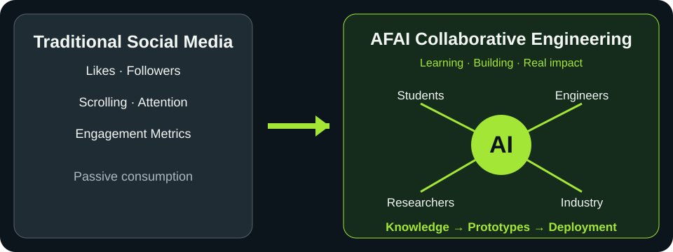

Engineering Challenges
Companies share carefully scoped robotics problems in vision, manipulation, navigation and automation, protecting confidential information.
From social media to collaborative engineering intelligence. Build online communities that help people learn, create and solve real industrial challenges together—not merely consume content.
AFAI brings together engineers, students, researchers and industry innovators to transform shared knowledge into reproducible experiments and deployable robotics solutions.

Conventional social platforms often measure success through reach, reactions and time spent. Engineering communities should instead measure learning, reproducibility, collaboration and practical outcomes. AFAI's purpose is not to keep engineers online longer: it is to help them achieve better engineering results through collective knowledge and intelligent tools.
Don't just connect engineers. Empower them to build, learn and innovate together. A useful interaction should produce something reusable: a documented question, a tested hypothesis, a simulation, reviewed code, a benchmark or an industrial solution.
Companies share carefully scoped robotics problems in vision, manipulation, navigation and automation, protecting confidential information.
Students and professionals learn through prototypes, experiments, simulation and measured results.
AI helps formulate problems, retrieve technical knowledge and prepare experiments, with human review.
Teams share permitted ROS 2 workflows, simulation assets, models and reproducible findings.
Recognition reflects verified contributions, clear documentation and real solutions—not follower counts.
Privacy, intellectual property, attribution, moderation and accessible participation are essential design principles.
Build the community, invite participants to share non-confidential challenges and distribute engineering resources.
Develop project discussions, GitHub collaborations, simulation exchange and interdisciplinary teams.
Connect the copilot to a permissioned, attributed and reviewed community knowledge base.
AFAI is more than an AI engineering copilot: it is an emerging collaborative ecosystem for Physical AI and industrial robotics.
Join the AFAI Community — Free ↗
The community ecosystem is a product vision and phased roadmap. Future capabilities are not presented as already launched.